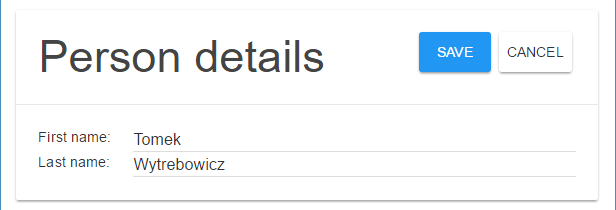
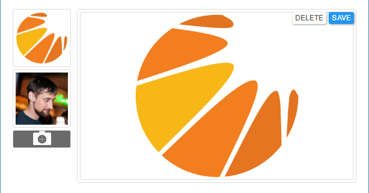
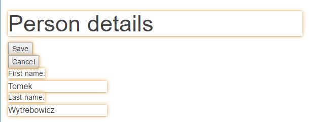
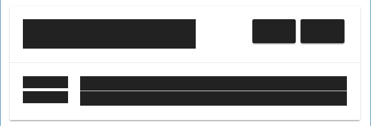
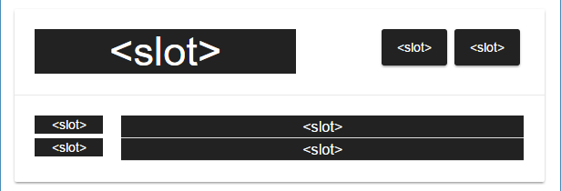
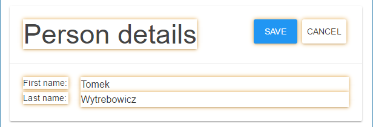
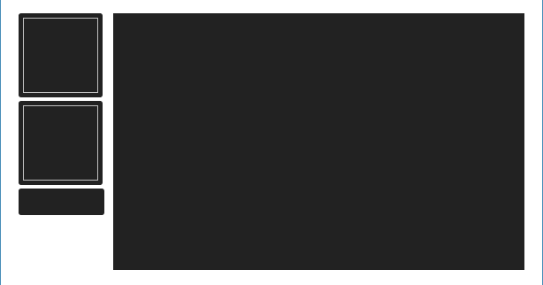
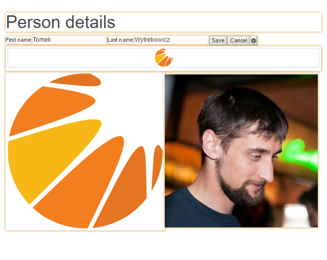
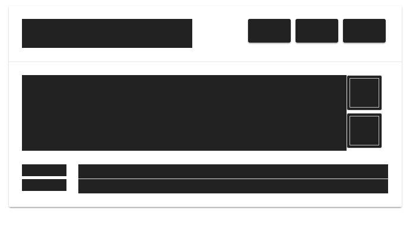

Shadow DOM layout compositions
Tomek Wytrębowicz

Overview


What is the underlying technology?
The Web Components
Web Components specs:
- Template Element
- HTML Imports
- Custom Elements
- Shadow DOM
Shadow DOM
- separate layout from semantics
- modularity: compose one page from many documents
- code clarity: hide implementation details of an element
- CSS scoping/encapsulation
- Distribute elements without touching their strucutre
In example
   In example
App A
App B
Apps A x B
 Benefits?
Individual app
Shadow DOM layouts
- Same results as in writing monolithic front are available
- Separates layout from functionality
- Shorter and more readable code
- Content is more discoverable to SEO and robots
- Encapsule CSS
- Declarative Shadow DOM
- Simplified theming
- A/B testing
- Generating layouts
Tools
- Change the layout using browser tools, then just click save
Echosystem
- ...
- Change the layout without touching funtional elements
- Reuse layouts provided by app dev
- Easy as moving lego blocks
- Flexible as writing custom HTML page from top to bottom
- Layouts are managable as any other data in
How we can do that?
Insertion point
<starcounter-include/>Prepare individual app
Default compositions
Given with the partial's HTML code
Default compositions
Migrate old-school code
As simple in code as it looks in pictures
identify functional elements
move the rest into composition
Specific ones
- Also HTML code
- comes as data in JSON view-model
- With same
constrainsfreedom of HTML doc.
<template>with any HTML+CSS structure and<slot>s - could be migrated between instances w/ tools
- Could be changed byserver-side code
Rule them all!
Merged partial
What if there is none?
Use defaults
No worries, we have plans to improve this step as well. Anyway, what's more important we have many means to provide this layout.
What we can do with compositions for merged partials?
-
Whatever Web allows
- Reorder inbetween between aps
- hide
- resize
- ...
- Apply any CSS rules
- Build any HTML structure
- Even add scripts if you're brave enough
-
Just use
to distribute an element<slot name="App/el">
How to provide & create HTML composition?
Code Defaults
- Way to provide defaults
- Styling standalone
- Provided by app devs
example
Populate Stacounter.HTMLComposition
- (Usefull for) automated deployments and migrations
- (should be delivered with) applications suites and mappers
- Used for programmatically created Compositions (out of scope of this presentation)
curlINSERT INTO ...new Starcounter.HTMLComposition- ...
Editors
for humans
- heavy-coders
- any-coders
- no-coders
- designers
- ... anyone who knows how to use a web browser
Live editor
- Run Launcher / Layout App
- Open the editor
- Pick a partial to edit
- Changes with live-preview
[gif/iframe w/ example]
Live editor for coders
- code editor
- type any HTML needed
- clear & save with single click
slotelements created automatically- Integration with browser's dev tools
- Changes with live-preview
[gif/iframe w/ example]
Live editor for non-coders
- WYSIWYG editor
- simple lego-blocks
- move up-down
- resize
- group
- hide
- Inter-operates with advanced layouts
- Changes with live-preview
[gif/iframe w/ example]
AI generated layouts
(developement planned for Jan/Feb 2017)
- Proposes composition
- Re-generates & learns on demand
- Takes many factors
- Mapped and bound concepts
- HTML semantincs
- slot names
- base the knowledge on entire echosystem
- profiles to your needs
Guidelines
- #UseThePlatform
- Leave functional elements on root level
- Put layouts into shadow
- Keep them as plain and vanilla as possible
- Do not expose
TextNodes on root level (use<span>) - Prefix classnames, ids, slot names w/ App name
- explicit slot names
- do not use default slot in default compositions
Browser support
Shadow DOM v1 vs v0
V0
- Initial spec
- Currently in use
- Currently supported by polyfills and Chrome
- Supported by until Polyfill@v1 release (~Q1 2017)
V1
- Latest spec
- Slightly polished API
- All browser vendors agreed on
- Suits our needs even better
<content select='[slot="App/name"]'><slot name="App/name">Shadow DOM v1
| ✓ |
by Google team, supports V0, V1 in development. Supports all browsers below | |
| ✓ | V0 & V1 | |
| ✓ | V0 & V1 | |
| • | ⚑ behind the flag dom.webcomponents.enabled |
|
| Safari | ✓ | V1 (Safari 10) |
| • | "Priority: High — We intend to begin development soon." |
Starcounter versions
2.2.1.3234
(Sep 2016)
Editors
| Code editor w/ dev tools integration |
in Launcher App |
as a custom element <starcounter-layout-html-editor> |
|
| WYSIWYG editor | Planned for this month, Dec 2016 |
| AI generated layouts | Prototype planned for Feb 2017 |
Thanks!
Tomek Wytrębowicz
tomalec
@tomalecpl
Articles:
Layout compositions for HTML partials - starcounter.io/layout-compositions-html-partials/
Unobtrusive styling and composing 3rd party HTML content - starcounter.io/unobtrusive-styling-composing-3rd-party-html-content/
HTML partials/includes WebComponents-way - starcounter.io/html-partialsincludes-webcomponents-way/
This & other talks: